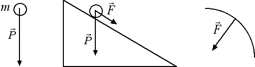
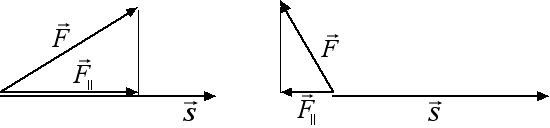

Lavoro e potenza
Lavoro di una forza costante

Per introdurre il concetto di lavoro di una forza costante partiamo dai tre esempi indicati nella figura.- Consideriamo prima di tutto un corpo di massa m. Su tale corpo agisce la forza-peso diretta verticalmente dall'alto verso il basso. Pertanto anche il corpo cadrà lungo la verticale dall'alto verso il basso. Lo spostamento indotto dalla forza-peso e la forza-peso hanno in questo caso la stessa direzione e lo stesso verso.
- Nel secondo caso abbiamo un corpo posto su un piano inclinato. La forza-peso agisce ancora lungo la verticale ma, mentre la sua componente perpendicolare al piano è equilibrata dalla reazione vincolare, la sua componente parallela al piano rimane attiva e provoca un moto rettilineo uniformemente accelerato del corpo lungo il piano inclinato.
- Nel terzo caso invece abbiamo un moto circolare uniforme. In questo caso la velocità non cambia in intensità ma cambia punto per punto in direzione. La forza centripeta è diretta verso il centro della circonferenza ed è perciò perpendicolare allo spostamento. Non essendoci alcuna componente della forza diretta lungo lo spostamento abbiamo che la velocità rimane costante in modulo.
Dai precedenti esempi viene naturale definire una grandezza fisica in cui entri solo la componente della forza parallela allo spostamento. Questa grandezza fisica prende il nome di lavoro. Se la componente della forza parallela allo spostamento ha lo stesso verso del vettore spostamento, come nella figura sottostante a sinistra, allora il lavoro L compiuto dalla forza costante di intensità F è dato dal prodotto della componente parallela della forza per lo spostamento L = F|| · s ed è una grandezza positiva. Se invece la componente parallela della forza ha verso opposto rispetto al verso dello spostamento, come nella figura sottostante a destra, il lavoro si dice resistente e si definisce come L = - F|| · s. Il lavoro resistente è una grandezza negativa.

L'unità di misura del lavoro nel Sistema Internazionale prende il nome di joule (simbolo J). Dal momento che il lavoro è una forza per uno spostamento avremo che 1 J = 1 N · 1 m. Inoltre, poiché nella definizione di lavoro entrano solo le intensità dei vettori forza parallela e spostamento, il lavoro è una grandezza fisica scalare.
Come conseguenza immediata della definizione di lavoro abbiamo che, quando la forza è perpendicolare allo spostamento, come nel caso della forza centripeta, la componente della forza parallela allo spostamento e di conseguenza anche il lavoro compiuto sono uguali a zero. Quindi la forza centripeta è una forza che non compie lavoro.
Come prima applicazione, andiamo a calcolare qual è il lavoro necessario per sollevare una cassa di massa 10 kg fino ad un'altezza pari ad h = 10 m. La forza-peso della cassa è data da P = 10 kg · 9.8 N / kg = 98 N. Dovremo perciò applicare una forza di 98 N nella direzione dello spostamento per sollevare la cassa. Dal momento che la forza applicata alla cassa e lo spostamento sono due vettori paralleli e con lo stesso verso, il lavoro L necessario per sollevare la cassa è dato da: L = 98 N · 10 m = 980 J. Ovviamente tale lavoro è proporzionale al peso della cassa e all'altezza alla quale la vogliamo portare. Tale lavoro è inoltre indipendente dal percorso fatto ma dipende solo dall'altezza h alla quale solleviamo il corpo. Infatti, per sollevare la stessa cassa lungo un piano inclinato di lunghezza pari ad l e di altezza h = 10 m, dobbiamo compiere un lavoro pari alla componente della forza parallela allo spostamento: F|| = m · g · h / l per lo spostamento l. Il lavoro compiuto è perciò dato da:
L = m · g · h / l · l = m · g · h = 980 J, ossia è uguale al lavoro calcolato in precedenza.
In maniera analoga, se vogliamo spostare orizzontalmente un corpo di massa m in presenza di una forza d'attrito dinamico, dobbiamo preliminarmente vincere tale forza applicando una forza uguale ed opposta F = kd · m · g, dove kd è il coefficiente d'attrito dinamico. Il lavoro che dobbiamo compiere per spostare il corpo di s metri è pertanto uguale a L = kd · m · g · s, dal momento che anche in questo caso la forza applicata è parallela allo spostamento.